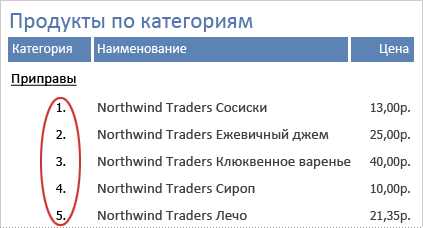

Добавление номера строки для каждой записи в отчете или группе
По материалам: https://support.office.com/
Конкретно: https://support.office.com/ru-ru/article/%D0%9F%D0%BE%D0%B4%D1%81%D1%87%D0%B5%D1%82-%D0%B2-%D0%BE%D1%82%D1%87%D0%B5%D1%82%D0%B0%D1%85-489791e0-dee2-46dd-8a72-f835998bd72e#bm2
Кратко:
ControlSource = "=1"
RunningSum = True
Подробно:
Пронумеровать элементы в отчете можно с помощью вычисляемого элемента управления и задания его свойства Сумма с накоплением (Running Sum).
1.В области переходов щелкните правой кнопкой отчет и выберите в контекстном меню команду Конструктор.
2.На вкладке Конструктор в группе Элементы управления щелкните Поле.
3.В области данных отчета перетащите указатель, чтобы создать текстовое поле и убедитесь, что оно достаточной ширины, чтобы вместить наибольший номер элемента.
Например, при наличии ста записей, необходимо место как минимум для трех знаков (100). Если метка появляется рядом с надписью, удалите метку, щелкнув ее и нажав клавишу DEL. Если надпись размещена рядом с левым полем, метка может быть скрыта под надписью. С помощью маркера перемещения в левом верхнем углу надписи перетащите надпись вправо, чтобы метка стала видна. После этого можно будет щелкнуть метку и нажать клавишу DEL.
4.Выделите текстовое поле. Если окно свойств не открыто, нажмите клавишу F4.
5.Откройте вкладку Все. В ячейке свойства Имя (Name) введите имя, например txtНомерЭлемента.
6.Откройте вкладку Данные.
7.В ячейке свойства Сумма с накоплением (Running Sum) выберите Для группы.
8.В ячейке свойства Данные (Control Source) введите =1.
9.Откройте вкладку Формат.
10.В ячейке свойства Формат (Format) введите #. (знак номера (#), за которым следует точка).
Это создаст формат номера строки с точкой в конце.
11.Сохраните отчет и переключитесь в режим отчета, чтобы просмотреть результаты.
